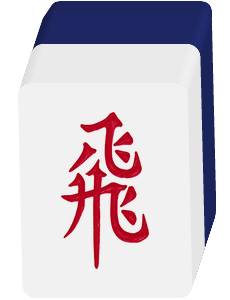
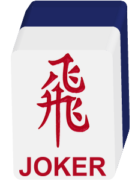
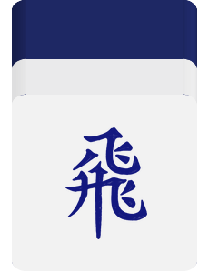
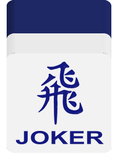
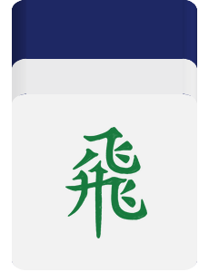
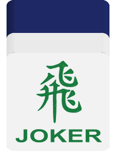
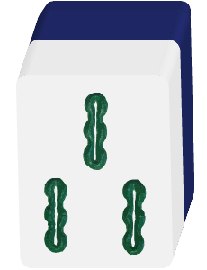
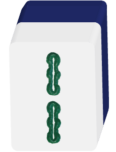
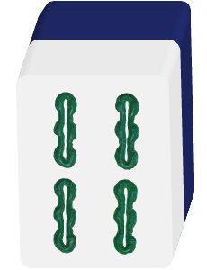
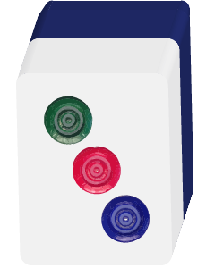

Updated at 8 October 2026
These rules cover Singapore Classic and the optional house rules offered by MahjongLeh. Singapore Classic rules are always active unless a section is marked optional or availability-gated. Optional rules are disabled by default and must be enabled in Match Setup. Quick Match always uses Singapore Classic; Local Play and custom multiplayer availability are stated below.
MahjongLeh closely follows the Singapore Mahjong rules. Singapore Classic is played with 148 tiles from three different categories — Suits, Honors, and Bonus tiles.
There are 3 types of suit tiles, with 9 numbers per suit and 4 copies of each tile, totaling 108 suit tiles:
There are 2 types of honor tiles: 4 types of Wind tiles and 3 types of Dragon tiles, with 4 tiles per type, adding up to 28 honor tiles in total
2 types of bonus tiles: 8 types of Flower tiles, 4 types of Animal tiles, adding up to 12 bonus tiles in total:
The optional Fei / Joker rule adds wildcard tiles to this set; it does not replace the natural tiles.
For a standard winning hand, form four sets (melds) and one pair (also called the Eye). A set can be either:
A pair consists of two identical tiles. Once you have four sets and one pair, you can declare a win (Hu), provided the minimum Tai requirement has been met. More information on Scoring can be found below.
With Fei enabled, a wildcard may complete a legal group subject to the Fei limits. Fei cannot be discarded or used in a Gang.
The game is played with 4 players, and the players are seated randomly, with the player seated in the east starting as the dealer. The dealer position rotates to the next player in counterclockwise order, except when the dealer wins, or when the game ends in a stalemate and no Gangs were formed during the game.
Each round has a Prevailing Wind, and each player is assigned a Seat Wind.
Each player starts with 13 tiles, and the dealer (East) starts with 14 tiles. Players take turns in counterclockwise order:
During gameplay, players can form melds either using the tiles in their hand, or by claiming a discarded tile:
When you draw a Flower, or Animal tile, you must:
Bonus tiles do not count toward your hand structure but may provide bonus Tai (台) when calculating your total Tai.
For a standard winning hand, form four sets and one pair. You can win by:
Fei are wildcard tiles added to the normal Singapore Mahjong set. Enable Fei in Match Setup for Local Play or a compatible custom multiplayer lobby when the option is available. Fei is off by default; Quick Match uses Singapore Classic.
The physical families are red Fei, red Fei Joker, Blank Fei, blue Fei, blue Fei Joker, green Fei and green Fei Joker. All have the same wildcard uses. A family means one printed face and colour; representing a natural tile does not change that identity. It matters for Four Matching Fei and Five Different Fei. Blank Fei is a playable wildcard, separate from the natural White Dragon (白板).
For your first Fei game: use Fei to fill missing tiles in a legal hand, discard a legal natural tile instead of Fei, and check the table's settings before using the optional actions below. A standard Fei-assisted win still needs four sets and an eye, plus the table's minimum Tai. Natural special hands and instant wins are explained separately below.






| Where it is | What it means |
|---|---|
| In your hand | A wildcard available for a legal winning hand or an allowed discard claim. It cannot be discarded. |
| In an exposed Chi or Pong | It represents the natural tile chosen when the meld was made. That identity stays fixed. |
| Set aside with DUN | It is no longer part of your hand or a meld. It adds 1 Tai if you later win. |
Fei are not Flowers or Animals. They are not automatically revealed or replaced when drawn. Keep them in your hand unless you choose a legal claim or DUN action.
A natural tile is an ordinary Suit or Honor tile. A Fei may stand for a missing natural tile, but each group must remain a legal Mahjong group:
The full hand must still meet the table's minimum Tai and the usual winning-source, timing and discard restrictions. Fei substitutions cannot make Seven Pairs, Thirteen Terminals or Nine Heavenly Gates. Those hands remain possible in a Fei game when their required shape contains only natural tiles. Other compatible Tai awards use the completed hand with each Fei counted as the tile it represents. The separate Honor Instant Wins require natural Dragon or Wind sets. The usual maximum Tai cap and payment settings still apply; holding a Fei gives no Tai by itself. A qualifying ordinary hand containing Fei may rob the natural tile of an Added Gang; this does not permit Fei inside the Gang itself.



3 Bamboo + 3 Bamboo + Fei can form a triplet of 3 Bamboo. 2 Bamboo + 4 Bamboo + Fei can form 2–3–4 Bamboo. 3 Bamboo + two Fei needs Open Fei and the two-Fei-per-Pong setting. Three Fei alone cannot form a triplet, and two Fei alone cannot form ordinary eyes.
Closed Fei is the default. It prevents using a Fei to claim another player's discard for Chi or Pong. It does not prevent a legal Hu using Fei already in your concealed hand, and it does not restrict fully natural claims.
With Open Fei enabled, choose the allowed Fei claims:
| Choice | Fei-assisted discard claims |
|---|---|
| Honor Pong only | Pong of a Wind or Dragon. |
| Pong only | Pong of any natural tile. |
| Chi and Pong | Either allowed Pong, or Chi from the player immediately before you. |
The discarded tile must be natural. An exposed Fei's represented identity cannot be changed later to suit a different hand. Normal claim restrictions still apply.
Among legal Pong claims on the same discard, fewer Fei takes precedence. Count all three tiles in the completed Pong, including the claimed natural discard:
A Pong with fewer Fei wins even if its claimant sits farther from the discarder. If the Fei counts are equal, the nearest claimant after the discarder in turn order wins, wrapping around the table. Responding first gives no priority, and the printed Fei family does not affect the ranking.
This ranking does not make an otherwise illegal claim legal. Closed Fei remains the default; the chosen Open Fei policy, triplet limit, revealed-tile limits and discard restrictions still apply. Action priority remains unchanged: Hu and Gang outrank Pong; Pong outranks Chi / Chow.
With a tile set containing Fei and Fei Joker, Open Fei allowing Suit Pongs, and the two-Fei limit enabled, a player discards 3 Bamboo. The two pictures show alternative Pongs competing for that same discard; only the winning Pong is made.
Equal Fei count: suppose turn order is A → B → C → D → A. D discards 3 Bamboo, and A and C each claim with one natural 3 Bamboo and one Fei from hand. Both Pongs have 1 Fei, so A wins as the nearest claimant after D, even if C responds first or uses a different Fei family.
When DUN is enabled and a replacement remains available:
The dealer may DUN during their first normal turn, after the opening checks and bonus replacements. Normally, other players wait for their own draw turn, including a Gang replacement. There is no separate opening DUN round.
Exception after Chi/Pong: if the claim leaves no legal discard, the game can offer DUN to avoid False Win, provided DUN is enabled and a replacement remains. This does not allow DUN after every claim. The original post-Chi discard bans still apply to previously held tiles; a newly drawn natural replacement may be discarded, even if it has the same value as a barred tile.
Each declared Fei adds 1 Tai if you later win. It pays no immediate credits. Declared Fei do not count as wildcard hand tiles, Four Matching Fei, Flowers or Animals. A self-drawn win on the DUN replacement earns the normal +1 Replacement Tile Bonus, including after intervening Flower/Animal replacements. Repeated DUN actions do not count as Gangs or earn Double Gang. DUN starts a separate replacement sequence and ends any active Gang Shang: Discarder Pays All responsibility. The earlier Gang payment remains settled.
Your hand receives one back-wall replacement. The set-aside Fei can add +1 Tai to your later win.
Fei in hand → DUN → Fei set aside + one replacement in hand. If you DUN twice, you take two replacement draws and have +2 declared-Fei Tai available if you win later. You receive no credits merely for declaring them.
QI FEI returns a Fei from your own exposed meld to your hand:
Open Fei and QI FEI must be enabled. To exchange a Fei from a Chi, also enable Chi claims and QI FEI from Chi. You cannot use an older tile already held, another player's discard, another player's meld, or a Gang. You can exchange once per draw, including a qualifying replacement draw.
QI FEI draws no extra wall tile and awards no Tai by itself. The meld remains exposed. Once all Fei in a Pong have been replaced, it is a natural Pong and may be upgraded with a fourth natural tile when a legal Added Gang is offered. Continue with the offered actions; the returned Fei may be used in a legal win or declared with DUN if eligible.

Your exposed Pong is 3 Circles + 3 Circles + Fei representing 3 Circles. On drawing a natural 3 Circles, QI FEI leaves three natural 3 Circles in the exposed Pong and returns the Fei to your hand. An older 3 Circles already in your hand cannot make that exchange.
On a complete four-set-and-eye winning hand, including a legal Fei Zou Jie hand, holding at least four concealed Fei from one physical family adds 5 Tai by default, configurable from 4 to 10 Tai. It is awarded once, even if you have more than four or more than one qualifying family. A self-drawn Fei counts; Fei used in exposed melds or set aside with DUN do not.
The optional opening instant win is separate and off by default. It checks once at the selected time. Initial deal only checks the dealt tiles before bonus replacements and includes the dealer's pre-drawn 14th tile. Before first turn checks after opening Flower/Animal replacements. Eligible players are offered a win starting with the dealer and continuing in turn order, and may pass.
This instant win needs no complete four-set-and-eye hand. The configured Four Matching Fei award must meet the minimum Tai; for example, a 5-Tai award cannot trigger it at a 6-Tai minimum. It awards only the configured Four Matching Fei Tai, then applies the maximum Tai cap. Flower, Animal, Heavenly Hand and Earthly Hand bonuses are not added to this instant-win award.
If the dealer already has a legal complete opening hand with a higher payout after the cap, the game uses that hand's ordinary scoring instead. On an exact payout tie it uses the instant-win award. The opening check is not repeated after DUN. Collecting four later does not automatically end the hand; you still need a complete legal winning hand.
Four Fei Joker qualify as one family. Two Fei + two Fei Joker do not, even if all four represent the same natural tile.
In a 20, 24 or 28 Fei deck with four of each physical type, this optional award needs at least five different Fei families concealed in your hand. Each family counts once, however many copies you hold. Fei in exposed melds or set aside with DUN do not fill a missing family; neither can another player's winning discard. Other legal exposed groups do not prevent the award.
A complete legal ordinary win scores 5 Tai by default, configurable from 4 to 10 Tai. This remains available when the opening instant win is off or its window has passed. It may score alongside Four Matching Fei if both concealed conditions hold. Keeping five different Fei does not by itself end the hand later.
The separate opening instant win is off by default. Choose Initial deal only or Before first turn after opening Flower/Animal replacements. It needs no complete ordinary hand, but its configured Tai must meet the table's minimum; the maximum Tai cap still applies. The game checks seats dealer-first in turn order, and players may pass. If both Fei opening awards qualify for one player at the same checkpoint, the higher configured Tai wins; Four Matching Fei wins an exact tie. A strictly better payable ordinary opening win takes precedence over the selected instant award. The two opening timings are independent and each runs only at its chosen checkpoint.
Example: one concealed red Fei, red Fei Joker, Blank Fei, blue Fei and blue Fei Joker meet the five-family count in a 20-Fei split deck. Four red Fei plus one blue Fei give only two distinct families. The physical faces count, regardless of which natural tiles they could represent.
Fei Zou Jie offers another way to complete the eye while keeping four legal sets. Two concealed Fei, including different families, may represent the same natural tile as a special eye; a self-drawn Fei can complete that two-Fei eye. A natural winning tile may instead complete a valueless eye with one held Fei: that eye cannot be a Dragon, the seat Wind or the prevailing Wind. This valueless-eye restriction applies to the Zou Jie route; an ordinary eye made from one natural tile and one Fei follows the usual rules. A natural winning tile can also complete the fourth set while two held Fei form the special eye. All other groups must obey the normal Fei limits and contain natural tiles.
Example: with three legal sets already complete and 2 Bamboo + 4 Bamboo + Fei + Fei Joker still concealed, a winning 3 Bamboo can complete the fourth set (2–3–4 Bamboo). The Fei and Fei Joker form the special eye. The complete hand must still qualify under the table's winning-source, minimum Tai and revealed-tile settings.
Choose Self-draw only, or Discard or self-draw to also allow eligible natural discards. This special route does not apply to Robbing the Gang. It adds 0 Tai, does not bypass the minimum Tai, and still respects revealed-tile and discard restrictions. Holding two Fei does not guarantee a win on every tile. The game compares legal ways to complete the hand and uses the highest payout after the Tai cap. When a win on a natural discard qualifies both ways at the same payout, the game shows the Fei Zou Jie interpretation.
When enabled:
The optional No second natural Pong of the same tile setting goes further: after a Pong is exposed, no later exposed Pong of that identity may be called, even using all-natural tiles. It does not forbid a fully natural concealed triplet. It is available only when revealed limits are on.
An exposed Fei binding accepted earlier stays legal when more natural copies are revealed later. It is not retroactively changed. If QI FEI returns that Fei to your hand, its next use must satisfy the current limits again.
Fei-capable Release clients support 4, 8 or 12 additional tiles when Fei is enabled. The normal 148-tile set and 15-tile reserve remain intact. Larger 16, 20, 24 and 28 Fei decks, their blue and green families, and Five Different Fei are Debug-only options; they are not available in Release. Online rooms also require compatible clients and backend support.
| Fei count | Composition choices |
|---|---|
| 4 | Four Fei. |
| 8 | Eight Fei (default), or four Fei + four Fei Joker. |
| 12 | Twelve Fei (default), or four each of Fei, Fei Joker and Blank Fei. |
| 16 · Debug | Sixteen red Fei (default), or four each of red Fei, red Fei Joker, Blank Fei and blue Fei. |
| 20 · Debug | Twenty red Fei (default), or four each of the first five families, adding blue Fei Joker. |
| 24 · Debug | Twenty-four red Fei (default), or four each of the first six families, adding green Fei. |
| 28 · Debug | Twenty-eight red Fei (default), or four each of all seven families, adding green Fei Joker. |
| Setting | Default, choices and effect |
|---|---|
| Fei discard claims | Closed Fei. Choose an Open Fei claim policy to allow the Fei-assisted Chi/Pong claims described above. |
| Maximum Fei per triplet | 1. Choose 2 only with Open Fei enabled; the limit applies to exposed and concealed triplets. |
| Four Matching Fei Tai | 5. Choose 4–10 Tai; four concealed tiles must belong to one family. |
| Opening Four Matching instant win | Off. Choose Initial deal only or Before first turn; the configured award must meet the minimum Tai. |
| Five Different Fei | Off. Available only with 20, 24 or 28 Fei and four of each physical type in Debug. Keep five different families concealed; the award defaults to 5 Tai and can be set from 4–10. |
| Opening Five Different instant win | Off. Choose Initial deal only or Before first turn independently of Four Matching; the configured award must meet the minimum Tai. |
| DUN | Off. Set aside a Fei and draw a replacement when offered; each declared Fei adds 1 Tai to a later win before the cap. |
| QI FEI | Off. Requires Open Fei; exchange only the just-drawn natural tile for a matching Fei in your own exposed meld. |
| QI FEI from Chi | Off. Also requires QI FEI and the Chi and Pong claim policy. |
| Fei Zou Jie | Off. Choose Self-draw only or Discard or self-draw; it adds 0 Tai. |
| Revealed-tile limits | Off. When enabled, public natural copies and existing exposed Pongs restrict new Fei uses as described above. |
| No second natural Pong | Off. Requires revealed-tile limits; also blocks a later fully natural exposed Pong of that identity. |
Agree on the settings displayed in Match Setup before starting. Every seated human in a custom lobby needs a compatible app version; an incompatible app cannot join or rejoin while Fei is active. Quick Match remains Singapore Classic.
Fei cannot be discarded. If your turn has no legal discard and no other legal action remains, the hand ends automatically as False Win / Invalid Hand. This can happen after drawing, after a Chi/Pong, or after returning a Fei with QI FEI. An available legal win or DUN action is considered first, including the post-claim DUN exception above. Declining a win does not make a Fei discardable. Even when the last drawable tile is reached, a Fei dead end can end as False Win rather than an ordinary stalemate.
The affected player pays each other player the fixed 6-Tai base amount: credits per Tai × 32 per opponent, or credits per Tai × 96 in total. This penalty is not doubled for Zimo and does not use the normal winning-hand maximum Tai cap. For example, at 10 credits per Tai, each opponent receives 320 credits (960 in total), even if the normal maximum is 5 Tai. Previously settled instant payments remain settled.
Scoring in MahjongLeh uses a Tai (台)-based scoring system. Winning hands earn Tai based on hand composition and bonuses. The minimum Tai requirement to win is configurable (commonly 1 Tai).
These hands and timing awards apply whenever their conditions are met. Compatible awards are added together before the table's maximum Tai cap.
Seven Pairs is disabled by default and is not part of Singapore Classic. A player must enable and configure it for Local Play, or a host must do so for a supported custom multiplayer lobby. Quick Match remains Singapore Classic.
| Setting | Default | Choices and effect |
|---|---|---|
| Winning source | Self-draw only | Self-draw only, or self-draw/discard. Robbing an added Gang uses discard-source scoring. |
| Four identical tiles | Count as 1 pair | Count as one pair, which makes the quad unusable in a valid 14-tile Seven Pairs hand, or as two pairs. The four tiles remain undeclared. |
| Suit & honor stacking | Enabled | Add at most one of Mixed Suit (Half Suit) +2, Pure Suit +4, or Pure Honors +6. |
| Self-draw Tai | 3 | Choose 1–6 independently. This is the final Seven Pairs Tai for a self-drawn win; no hidden Tai is added. |
| Discard Tai | 2 | Choose 1–5 independently; used only when discard wins are allowed. |
A newly enabled rule uses the 3/2 defaults. The values displayed in the lobby are authoritative. Players may deliberately choose equal or different self-draw and discard values as a house-rule agreement.
Every seated human in a custom lobby needs a compatible app version. An unsupported member cannot enable or start Seven Pairs, or join or rejoin a lobby while Seven Pairs is active. Quick Match remains Singapore Classic.
These Local Play house rules are disabled by default and are not available in online tables.
This house rule is disabled by default and is available in Local Play and custom multiplayer; Quick Match remains Singapore Classic. Three Great Scholars (大三元) and Four Great Blessings (大四喜) can be enabled independently. The ordinary complete-hand versions listed above remain part of Singapore Classic; these toggles additionally end the hand as soon as the enabled third distinct Dragon set or fourth distinct Wind set is completed, without requiring four sets and a pair. The win receives the hand's listed Tai plus eligible Flower, Animal, Dragon, and Wind bonuses. The configured minimum Tai still applies.
In Fei games, these three Dragon sets or four Wind sets must be fully natural: Fei cannot substitute for tiles in the qualifying sets. A complete legal hand with four sets and an eye may still earn its usual Three Great Scholars or Four Great Blessings award using Fei. With QI FEI enabled, replacing the final Fei in an exposed Pong with a natural tile can make that Pong qualify for an Honor Instant Win. The 1 Tai per Fei set aside with DUN also counts towards this instant win's score and minimum Tai.
These terminal wins apply automatically in Local Play and have no Match Setup toggle. Online, they apply only when every seated player supports action:robbing_the_eighth:v1 and the online feature is enabled; that unanimous capability snapshot is frozen when the game starts. Unsupported online tables continue classic Flower reveal and replacement play. Only the eight distinct Flower tiles count; Animals do not. If the drawer owns all eight Flowers, that win takes priority. Otherwise, a player already holding the other seven may rob the newly revealed eighth Flower.
Both Flower terminal wins bypass the configured minimum Tai. Their winning-hand Tai and eligible Flower and Animal awards are combined, then the table's maximum Tai cap is applied once for payout. With u = credits per Tai × 2(awarded Tai − 1), All Flowers pays the winner 6u, with each opponent paying 2u. For Robbing the Eighth, the drawer is the Shooter: with Shooter enabled, the drawer pays 4u and the other players pay nothing; without Shooter, the drawer pays 2u and each bystander pays 1u. The winner receives 4u in either case.
Both Payment switches are independent and disabled by default. Local Play always offers them; a custom-lobby host may use them when compatible multiplayer support is available. Quick Match uses Singapore Classic payments.
Animal Special is disabled by default and is not part of Singapore Classic. Local Play offers it; a custom-lobby host may use it when compatible multiplayer support is available. Quick Match remains Singapore Classic.
The payments below use the default game settings. A player's physical opening 13 means only the 13 tiles initially dealt to that player; it excludes the banker's pre-drawn 14th tile and every opening replacement tile.
| Event | Default payment from each opponent | How it interacts with classic Yao Dao |
|---|---|---|
| The assigned animal is in the physical opening 13 | 40 credits | Replaces normal processing for that assigned-animal reveal. |
| The assigned animal and its partner are both in the physical opening 13 | 120 credits | The assigned-animal and assigned-pair awards replace the ordinary opening pair award. |
| The assigned animal appears outside the physical opening 13 without completing its pair | 20 credits | Applies to the banker's pre-drawn 14th tile, an opening replacement, or a later reveal. |
| A pair involving the assigned animal is completed outside the physical opening 13 | 40 credits | Replaces the ordinary Animal-pair award, regardless of which animal in the pair is revealed first. |
Every seated human in a custom lobby needs a compatible app version supporting blind Animal Special. If any seated human is unsupported, the lobby cannot enable or start Animal Special; while it is active, an unsupported app cannot join or rejoin that lobby. Quick Match remains Singapore Classic.
Bite Flowers is disabled by default and is not part of Singapore Classic. Local Play offers it; a custom-lobby host may use it when compatible multiplayer support is available. Quick Match remains Singapore Classic.
Collecting a Flower and Season with the same printed number belonging to another seat makes that seat's player pay you. Numbers follow the current Seat Winds: East - 1, South - 2, West - 3, North - 4. The payer changes with the Seat Winds as the banker rotates; it is not a fixed player assignment.
| Event | Default payment from that seat's player alone |
|---|---|
| Complete another seat's same-number Flower and Season pair | 20 credits |
| Both tiles of that pair were initially dealt, before replacement draws | 40 credits |
With Bite Flowers enabled, an eighth Flower that completes an All Flowers and Seasons self-draw win or an accepted Robbing the Eighth claim awards only the Flower-win payment for that tile. No new Flower-pair or same-group instant payout is added for it; earlier settled payments remain. If the robbery is declined, eligible instant payouts apply and replacement play resumes. Games with Bite Flowers disabled keep their existing settlement.
Every seated human in a custom lobby needs a compatible app version supporting both Bite Flowers and the automatic Flower wins, and the online Flower-win feature must be available. An unsupported app cannot join or rejoin an enabled lobby. Quick Match remains Singapore Classic.
At the end of a win, Tai (台) are converted into Credits. The maximum Tai for a game is configurable within the ranges of 1-30.
The following table summarizes the payouts:
| Tai (台) | Others | Player who discard the tile | Total Credits Payout | Self-drawn hand (自摸) | Total Credits Payout (Self-drawn hand, 自摸) |
|---|---|---|---|---|---|
| 1 | 10 | 20 | 10+10+20 = 40 | 20 | 20+20+20 = 60 |
| 2 | 20 | 40 | 20+20+40 = 80 | 40 | 40+40+40 = 120 |
| 3 | 40 | 80 | 40+40+80 = 160 | 80 | 80+80+80 = 240 |
| 4 | 80 | 160 | 80+80+160 = 320 | 160 | 160+160+160 = 480 |
| 5 | 160 | 320 | 160+160+320 = 640 | 320 | 320+320+320 = 960 |
| ... | |||||
| 10 | 5120 | 10240 | 5120+5120+10240 = 20480 | 10240 | 10240+10240+10240 = 30720 |
Example scenario:
If player A discards a tile that is claimed by player B to win with an 'All Pong' hand, the hand is considered to be 2 Tai (assuming no other bonuses). According to the payout calculation, player C and D will each pay 20 credits to player B, and being the player who discarded the winning tile, player A will pay 40 credits. In total, player B will receive 80 credits.
Certain actions trigger immediate credit exchanges before the hand ends. Instant payouts are settled immediately and are not affected by the final outcome of the hand. Instant payouts are disabled once the last drawable tile has been drawn. The optional Bite Flowers rule adds payments for another seat's Flower pair and changes instant payouts on a winning eighth Flower, as described above.
When enabled, the Shooter rule applies additional penalties to the Shooter who discards a tile that leads to an instant payout or a win. The shooter is responsible for paying on behalf of everyone.
The shooter rule only applies in the following scenarios:
The last 15 tiles are reserved and cannot be drawn. Flower, Animal, Gang and enabled DUN replacements come from the back of the wall while a legal replacement remains. The same 15-tile reserve applies in Fei games.
A game ends when:
An ordinary wall-exhaustion stalemate has no winning-hand payout. A Fei False Win instead settles its fixed penalty. Previously settled instant payments remain settled in either case.
MahjongLeh enforces the Sacred Discard (回头牌) and Missed Discard (过水牌) rule to prevent players from claiming tiles they have previously declined.
In Fei games, these restrictions apply to the natural discard being claimed. Open Fei does not bypass them. A held Fei cannot be discarded; see False Win when no legal action remains.
MahjongLeh enforces the Swap Calling (换吃) rule.